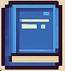

"El futur està en les vostres mans"
Només el vostre enginy pot tornar el Doc Brown al futur!
“El futur no es construeix sol, s’imagina i es dissenya.” - Rude Goldberg
El Doc Brown i en Marty McFly han fet un salt massa llarg en el temps… i ara el DeLorean ha quedat completament fora de servei. Per reparar-lo, cal una màquina capaç d’activar el condensador de flux sense electricitat moderna.
Abans de desaparèixer en una altra línia temporal, el Doc us ha deixat un missatge:
“Només els alumnes capaços d’unir ciència, creativitat i sostenibilitat podran restablir l’equilibri del temps.”
Inspirant-vos en la pel·lícula Back to the Future i en els invents de Rube Goldberg, la vostra missió és crear un mecanisme enginyós que funcioni utilitzant únicament materials reciclats.
Haureu de treballar en equips de 3 inventors i seguir totes les fases del procés tecnològic:
1️⃣ Detectar la necessitat o el repte.
2️⃣ Cercar informació i generar idees.
3️⃣ Dissenyar el vostre mecanisme amb esbossos i esquemes.
4️⃣ Construir-lo amb materials reciclats.
5️⃣ Comprovar-ne el funcionament, fer millores i documentar-ho tot.
Tota aquesta aventura quedarà reflectida en una memòria tècnica on constaran:
- Les vostres idees i objectius.
- Els materials utilitzats.
- Els esbossos i proves realitzades.
- Els errors, canvis i aprenentatges.
- 🌱 Recordeu: la clau és demostrar que la tecnologia pot ser divertida, creativa i sostenible!
🎯 Objectius de la missió - Aplicar totes les fases del procés tecnològic per crear un producte funcional.
- Treballar en equip cooperativament i gestionar les tasques amb organització.
- Fomentar la creativitat, la sostenibilitat i el pensament crític.
- Documentar adequadament el procés en una memòria tècnica.
- Valorar la importància de l’enginy i la tecnologia com a eines per millorar el futur.
⚙️ Producte final
Una màquina o mecanisme enginyós, fet amb materials reciclats, capaç de realitzar una acció senzilla però funcional, acompanyat d’una memòria tècnica detallada del procés.
🏆 Recompensa final
Els equips que completin amb èxit la missió i aconsegueixin que el seu mecanisme funcioni rebran una còpia secreta del “Manual d’instruccions del DeLorean”, el document imprescindible per poder continuar amb la següent missió.

Només els equips més creatius, sostenibles i organitzats podran tornar al futur! ⚡🕰️